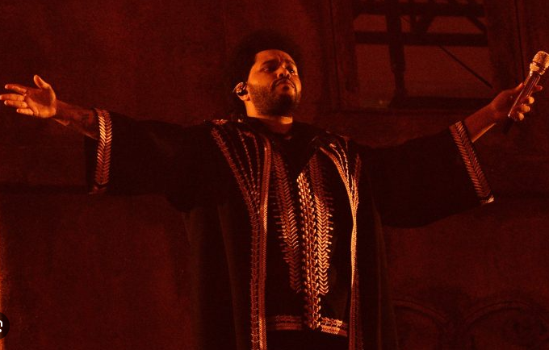

|  |
Tras el nombre de The Weeknd , se encuentra Abel Makkonen Tesfaye (Ontario, 1990) hijo único de Makkonen y Samra Tesfaye.
The Weeknd es una de las mayores estrellas del pop del siglo XXI. Es conocido globalmente por sus canciones oscuras y explícitas, la innovadora producción de sus discos y el característico timbre de su voz.
De ascendencia etíope, Abel tuvo una infancia complicada: su padre abandonó la familia, su madre fue encadenando múltiples trabajos para sacar a la familia, que compaginó con estudios en la escuela nocturna, mientras era cuidado por su abuela y gracias a ella, habla de manera fluida el amhárico.
Comenzó a consumir drogas a los 11 años, de fumar marihuana a consumo de Ketamina o MDMA, algún robo en supermercado y dejó de estudiar “un fin de semana” con un amigo. Y de esa deserción viene su nombre artístico, que fue modificado para no entrar en conflicto con la banda canadiense The weekend.
Aunque inicialmente comenzó a trabajar con Jeremy Rose, relación que no se llega a consolidar por diferencias entre ambos, The Weeknd comienza a hacer ruido con un tres sencillos que subió a Youtube y con la ayuda indirecta, se le incluyó en un blog de canciones del rapero Drake.
Lanzaría el mixtape House of Balloons en 2011, que le llevaría de gira por diferentes festivales en Canadá. Ese año lanzaría dos mixtape más: Thursday y Echoes of silence, lo que le dio a conocer popularmente como Balloons trilogy.
Tras esto participaría en una gira que le llevaría a participar en festivales por todo el mundo como Coachella (Estados Unidos), Primavera Sound (España) o Wireless Festival (Reino Unido), además de tocar en ciudades como New York, París o Bruselas.
A finales de 2012, junto a Republic Records, forma su marca XO y lanza el recopilatorio Trilogy, y se reconcilia con Rose acreditándole en los temas de House of Balloons. El álbum fue platino en Usa y doble platino en Canadá.
Kiss Land, sería su siguiente álbum en 2014, un año donde participó y colaboró con Drake o Justin Timberlake, cover del Drunk in love de Beyoncé, una gira multitudinaria donde creó expectación al ir revelando singles nuevos a medida que pasaba el tiempo. Un año que acabaría con Earned it,sencillo de la banda sonora de la adaptación de la trilogía literaria Cincuenta sombras de Grey.
Chapter III (2015), su primer álbum de estudio, seguiría la estela de ventas de sus anteriores álbumes y cuyos singles The hills, Can´t feel my face y Earned itocuparon los primeros puestos en la lista Hot R&B Billboard, el primer artistas en la historia de esta lista en conseguirlo.
Beauty behind the madness, siguió confirmando el éxito del canadiense, debutando ya como solista en el programa de Amy Schumer (Amy Schumer, Saturday Night) donde interpretó junto a Ariana Grande el tema Love me harder. Se convirtió en el álbum con más reproducciones en streaming y como uno de los 50 mejores álbumes de 2015 según la revista Rolling stones. También hay que citar su exitoso sencillo Starboy, en colaboración con el dúo francés Daft Punk.
My Dear Melancholy llegaría en 2018. Además colaboro junto a Kendrick Lamar en el álbum de la película Black Panther.
En 2020, apareció After Hours, del que se extrajeron singles con un éxito tan mayúsculo como Blinding Lights, el tema de mayor éxito de la historia de Spotify y del Billboard Hot 100.
The Weeknd se ha inspirado en artistas como R. Kelly, Prince, Michael Jackson, con una fantástica versión de su Dirty Diana, o incluso David Bowie. Compone letras llenas de sentimientos, con un tono de voz muy parecido al de Michael Jackson, llena de ecos tristes y un falsete registrado. Su característico peinado era una seña de identidad, hasta que se rapó en 2016.
Ha colaborado con multitud de artistas, como Lana del Rey, Kanye West, SZA y Travis Scott – es fan de la saga de Juego de tronos y los tres lanzaron la canción .Power is Power para la temporada final de la serie - entre muchos. Ha recibido elogios de muchos de ellos, como del gran Babyface y ha ganado cuatro Premios Grammy, nueve Billboard Music Awards, dos American Music Awards, nueve Juno Awards, y ha sido nominado a un Óscar. Además de poner la música en el desfile de Victoria Secret de 2016.
Ha participado en la película Diamantes en bruto junto Adam Sandler, interpretándose así mismo
En el terreno sentimental, mantiene una relación en la actualidad con la modelo Bella Hadid, que interrumpieron en 2016 y que dio pie a su romance con Selena Gomez que duro casi un año.
En 2022 lanzó Dawn FM, donde reincide en el sonido de sintetizadores y la inspiración en el synth-pop neochontero.
En ese año, igualmente, desarrolló junto a Sam Levinson y Amy Seimetz, el creador de la exitosa Euphoria, una serie de televisión, HBO, The Idol, en la que también participaría como actor, junto a Lily-Rose Depp. También actuaron en la serie Jennie de la girlband surcoreana Blackpink, Troye Sivan y la actriz porno Charly Summer.
La serie no fue bien recibida por la crítica y no se anunció su renovación. A pesar de esta mala recepción, sí consiguió un par de éxitos relevantes con su banda sonora, con temas como One of the girls y, sobre todo, Popular, junto a Madonna.
En 2024, The Weeknd lanzó un teaser de un disco que cerraría la trilogía conceptual formada por After Hours y Dawn FM. Este sería Hurry Up Tomorrow, que se presentó en directo con un concierto en São Paulo, con la colaboración de Anitta y Playboi Carti.El primer single fue Dancing in Flames.
A pesar del fracaso de The Idol, también ha apostado por su faceta como actor; y ha anunciado un proyecto junto al cineasta de culto Trey Edward Shults, junto a Jenna Ortega. Más tarde desveló que la película "acompañaría" conceptualmente a Hurry Up Tomorrow.